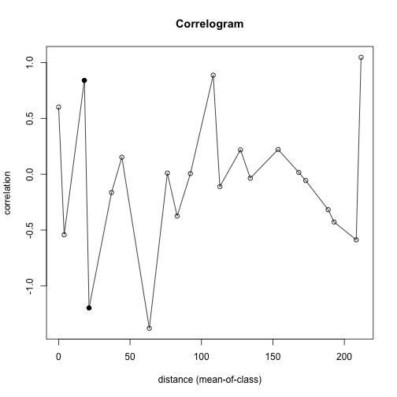

Factores ambientales que definen la composicion de las comunidades bacterianas en un suelo haloalcalino extremo altamente heterogeneo
- Edit YAML front matter
- Write using R Markdown
- Use an empty line followed by three dashes to separate slides!

Correlograma pH
C1.pH <- correlog(E, N.1, MuestreoInicial$pH, increment=10, resamp=1000, latlon=F, quiet=T)
## $n
## 0 1 2 3 4 5 7 8 9 10 11 12 13 14 16 17 18 19 20 21 22
## 2 7 6 3 6 6 2 1 5 3 1 1 5 3 4 3 11 1 4 3 1
##
## $mean.of.class
## 0 1 2 3 4 5
## 0.000000 3.893757 18.015494 21.316407 37.071488 44.262348
## 7 8 9 10 11 12
## 63.488546 76.138078 82.992885 92.261652 108.234664 112.854073
## 13 14 16 17 18 19
## 127.309213 134.209955 153.646758 168.130095 172.955038 188.697025
## 20 21 22
## 192.840225 208.331335 211.729527
##
## $correlation
## 0 1 2 3 4
## 0.601119664 -0.542147356 0.840226265 -1.197410777 -0.163809191
## 5 7 8 9 10
## 0.151866107 -1.380265920 0.009797061 -0.374653604 0.005551668
## 11 12 13 14 16
## 0.886773968 -0.111196641 0.218306508 -0.035689293 0.221536039
## 17 18 19 20 21
## 0.015861908 -0.056695719 -0.317704689 -0.428463961 -0.587590390
## 22
## 1.046885934
##
## $x.intercept
## (Intercept)
## 1.846454
##
## $p
## [1] 0.177822178 0.080919081 0.008991009 0.024975025 0.395604396
## [6] 0.246753247 0.024975025 0.496503497 0.220779221 0.424575425
## [11] 0.134865135 0.402597403 0.179820180 0.495504496 0.253746254
## [16] 0.419580420 0.470529471 0.337662338 0.206793207 0.140859141
## [21] 0.126873127
##
## $call
## [1] "correlog(x = E, y = N.1, z = MuestreoInicial$pH, increment = 10, "
## [2] " resamp = 1000, latlon = F, quiet = T)"
##
## attr(,"class")
## [1] "correlog"
Correlograma pH
plot(C1.pH)

Slide 4
\[I(d) =\frac{\frac{1}{w} \sum_{h=1}^{n} \sum_{i=1}^{n} W_{hi} (y_{h}-\tilde{y})(y_{i}-\tilde{y})}{\frac{1}{n} \sum_{i=1}^{n} (y_{i}-\tilde{y})^2 }\]
Slide 5
Animated list boom
- Soy 1
- Una potranquilla1
- Brava1
Slide 6
\[\tilde{\gamma}(h) = \frac{1}{2N(h)} \sum^{N(h)}_{\alpha =1 } [Z(u_\alpha)-Z(u_\alpha + h)]^2\]